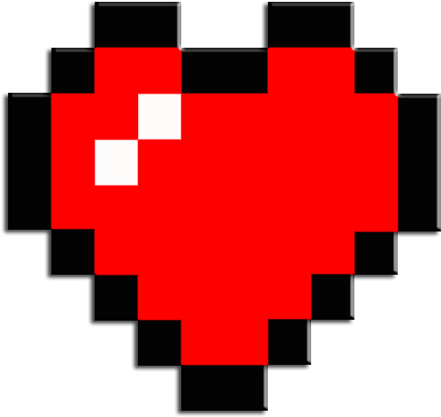
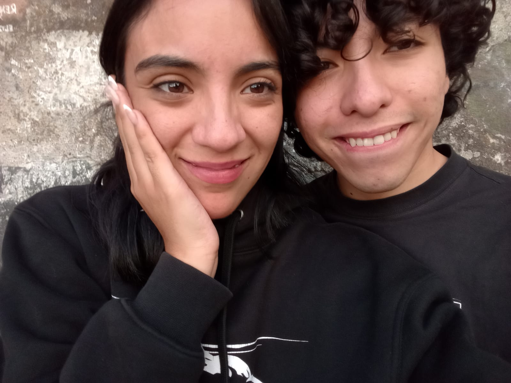
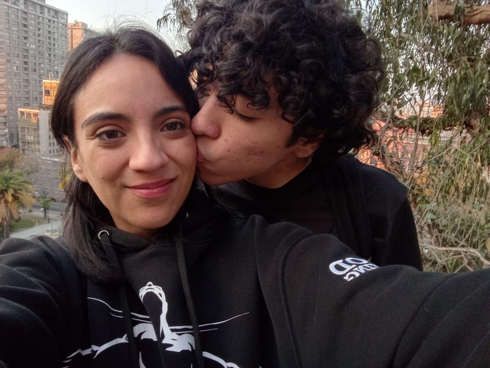
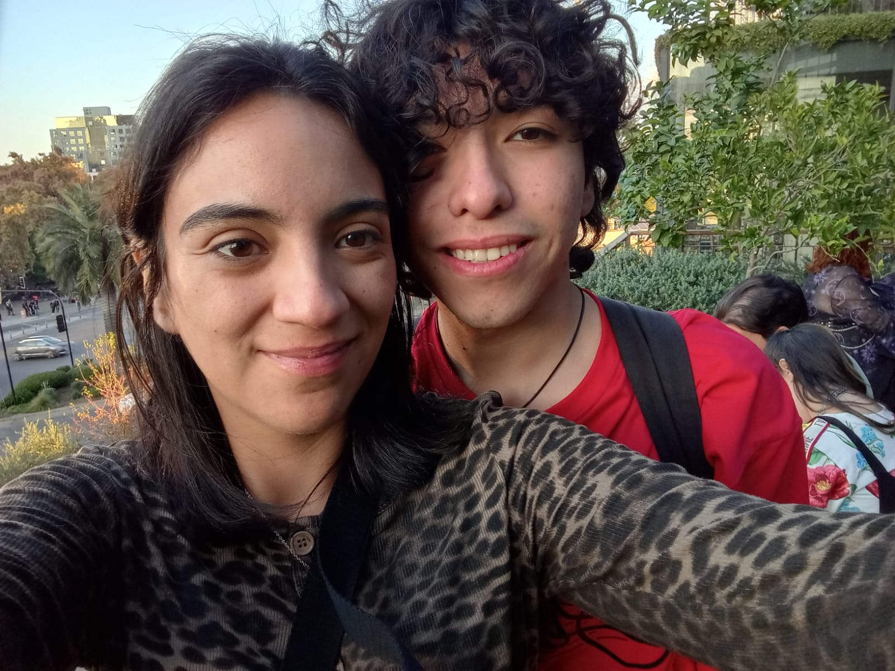
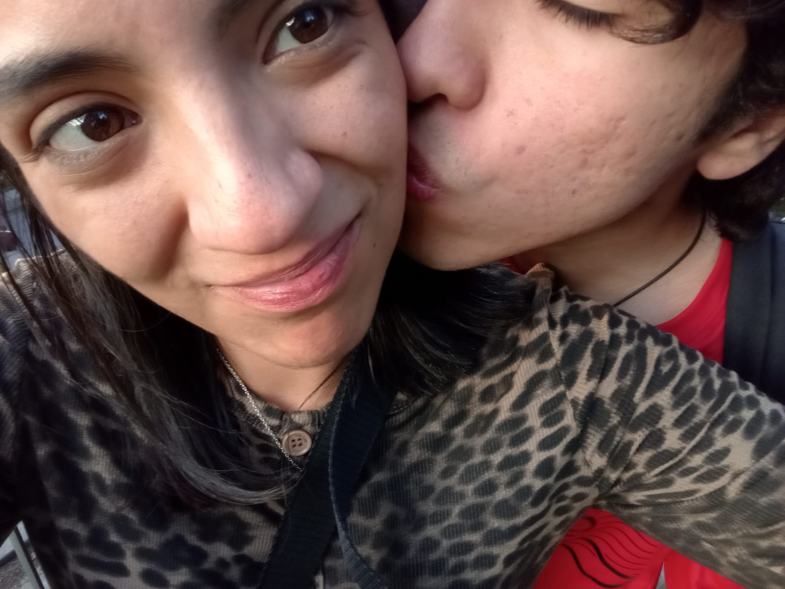
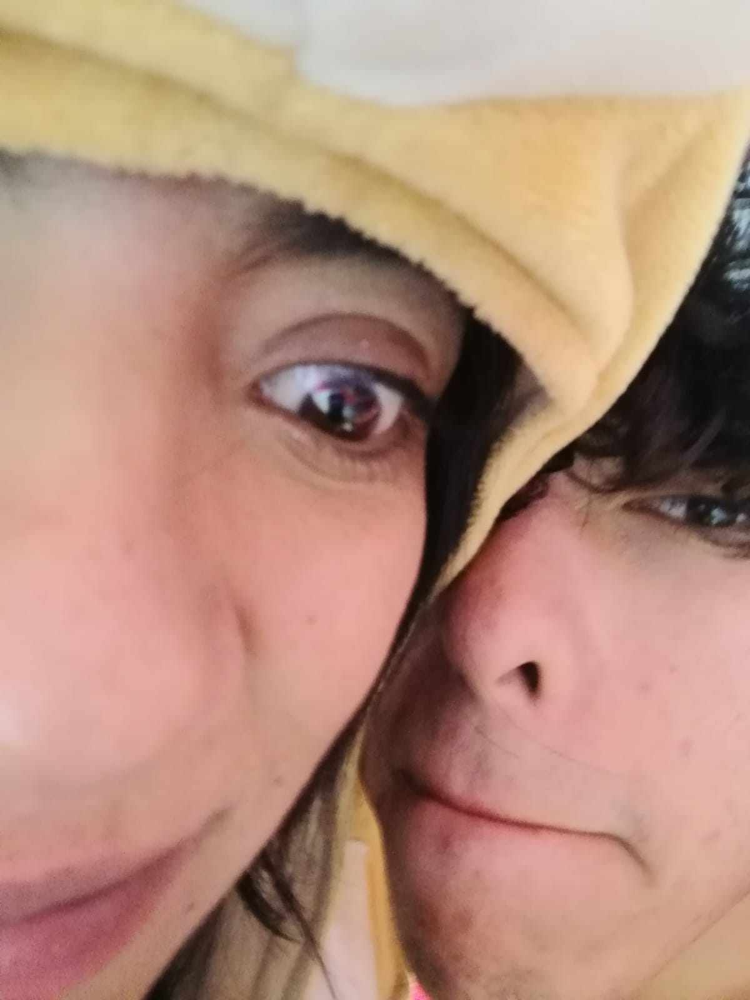

Se esconde en la sombra de cada 'te amo' que le digo a mi propia mente una necesidad por amarte y hacerte feliz. Como meta. Como motor para ser feliz.

Permíteme darte amor de una forma muy rara jsjjsjsjsjs
Quiero iniciar recordando lo hermosa, bella, inteligente, capaz, valiente, madura, tierna, linda, compleja, intensa, y todos los sinónimos de perfecta..., aunque es una palabra que se queda muy corta a comparación a ti. Tu eres algo más..., distinto. Hermoso, cuya presencia genera un cimiento y un lugar tan pacífico como deseado.
Se esconde en la sombra de cada 'te amo' que le digo a mi propia mente una necesidad por amarte y hacerte feliz. Como meta. Como motor para ser feliz.
Se esconde en tus manos
sinfonías azules
tal zafiro colorea nubes en cada nota.
Vibración de perla que simulan
tus latidos,
y su textura la envidia
de la misma Afrodita.
Teñida en sangre
y envuelta en amatistas.
El dolor toma sus ojos,
los eclipsa y
deja el dolor dominar.
En su cuerpo se esconde el todo,
y ser del todo no quiere,
lo es.
escribo y escribo
buscando respuesta de un viento sordo,
y le cuento que te busco.
Le llego a preguntar
aunque las palabras se devuelvan;
¿podría el espacio abrazarla en mi ausencia?
Y darle ese calor de una fricción,
quizás, abstinencia
de besos por besar.
Sentí una breve ausencia,
Entre tu beso y el mío.
Y lo note en el aire que muere
En los cordones de los metros.
Sentí anhelo y calma
Y mi cuerpo deseaba convertirse
En agua entre tus dedos.
El tiempo era sólido y terco;
Como los latidos de un corazón
Que cree morir en el siguiente latido.
Y, aunque el tiempo odie a lo bueno,
Congelamos y vimos pasar toda nuestra
Vida, con el regalo del cielo
Y el favor de un caminno dado de la mano.
Anoche rogué un sueño,
Como rogarle al mar que regale
Espuma sin especificar su forma,
Y de noche,
La noche fue guía.
La almohada donde descansa tu cuerpo,
Unió al mío con un permiso tornada niebla.
Amor,
El sueño dejó de ser sueño,
Y florecer entre la pérgola de tu alma,
Resonancia de palabras dichas en la presencia,
Como ver el colapso de las nubes
Siendo vestida por el cansado sol,
Desde el arrecife de edificios y sus siluetas.
Anoche soñé suenos que no eran míos;
Alguna carretera, con el horizonte oxidado,
En un viaje padecida a una danza donde estamos los dos cansados.
La química del viento envuelven tu pelo
Y la música nos rodeó por el camino de la realidad,
La tierra y la desoberiencia del mar.
Había una guitarra, mil melodía y cada una venían de tu boca,
De coincidencias con sabor a cherry
Y de paisajes antiguos que te pertenecen.
Soñé un sueño que no era mío,
Ahora, con cierta arrogancia,
Lo siento mío.
Sabe distinto,
Lo veo distinto, pero no importa;
Los días nos deben favores,
Como la constancia del mar,
La lejanía necesaria de tu cuerpo y tus besos,
Y la vida dentro del firmamento
Que adornan al cariño de caminar en Yosemite.
Estamos soñando, con el destino bajo llave,
Un par de cigarros y los eones de cada estrella con torpe brillo
Que trazan el tiempo,
Y orbitan entre nosotros, sin ideas,
Sin ruido y sin dolor.
Anoche soñé un sueño, y te sentí cerca
En la lejanía dentro de un cristal de mi cama,
Anoche soñé que te amaba,
Anoche soñé que me amabas;
Pero no fue necesario conducir
Entre las fertiles carreteras de California.
No,
Anoche soñé tus sueños, sí...
Pero lo vivo cada día
Con el roce de tus ojos,
La perfección de tu existencia
Y las veces que me dices; Te amo.






Noches tiernas te están llamando
sé que lo hacen; tienen tu nombre.
noches tiernas donde las chispas de las estrellas
guiaban el fuego y el viento.
cosas que se dejaron de lado
cosas que se volvieron importante
cosas que nos hizo sanar
noches tiernas fueron abrigadas por neones y rascacielos
nubes intentando encajar en la ironía que tiene el cielo con el vacío
melodías desde las auroras hasta tu oído
confundo tu olor
lo suelo reconocer a diario
entre las calles, entre el sueño, mientras te extraño
el viento lo suele atraer, como si supiera exactamente
donde dejarse llevar
a un tiempo un poco atrasado, como el toque suave que tienes
al rozar tu dedo por mi cara,
los días fueron eternos
en el deseo de vivir mil vidas en cada segundo
tu haces deseos, y la realidad se vuelve a equivocar.
te tengo que decifrar, con lo mismo que cifré mi cariño en ti
el mundo va a morir en cualquier momento,
nos cegamos creer que mañana volverá a brillar el sol
y es ahí es;
donde entre el calor del otro y la necesidad de renunciar
a la vida y vivirla contigo.
descubrí que vivo desde que la conquista
de tu ser inundó mi tiempo olvidado.
el sonido de la ciudad tiene otro sabor a esta hora
inclusive las mismas lagrimas que caen por motivo u otro
podrían ser los miles de relámpagos desconocido
que le dejan cicatrices a la noche
y donde dejamos un poquito de nosotros en cada una
esperando coincidir en alguna cicatriz para sanarla
el sonido de la ciudad lo escuchamos hace tanto tiempo
y nos dimos cuenta cuanto tiempo estuvimos alejados
remanente de besos dirigidos a la luna
recuerdo sin rostro donde te abracé
y de pronto, en forma de luciérnagas
en forma de vida, en forma de amor
caminas descalza sobre las ciudades de cemento
vuelas en los profundos cordones de montañas
juegas a todo y ganas en cada uno
cantas melodías de los colores
que brotan desde el interior del abismo
entre el frío y la soledad de la garganta del mar
hasta las partículas eternas
que murieron cuando brotaron en las estrellas
podría seguir,
quiero seguir
quiero que lo veas,
mañana una estrella va a desaparecer cuando el sol lo ordene,
mañana mil vidas van a nacer en el momento que tu sueñes.
dejemos morir al mundo
con su hipocresía y su belleza
dejémoslo morir con nosotros en él.
y vivirás sin mi, tu puedes y yo también
yo decido renunciar a vivir
como cuando las mariposas renuncia la eternidad
para brillar su exactitud de la naturaleza por solo un día.
yo decido renunciar a vivir porque si, para vivirla contigo.
ayer
ver las veces que deje de soñar
dormir viviendo al aprender a volar
u oler el mismo perfume que dejan las gaviotas
y dibujaban algo difuminado en el cielo
años después
te preguntaba:
¿podría tomar tu mano y quedarme a verte?
esperando a que veas
como le temo al frio que te lleve
no se si logro dejar entender
que el amor es más que una palabra en el corazón
minuto
por poder vivir
contarlos sin saber a donde tendré q ir
solo se
que minuto tras minuto
quiero estar donde tu estarás.
magentas dibujaban tu siluenta en el mar
y el aire estaba compuesto por otra textura
mirar esos ojitos cansados sin saber a cual hoja quedarse a mirar
como caen las ramas del tiempo y las palabras
tengo la suerte de ser el egoista que vive enamorado
donde su presencia se vuelve el umbral que deseo pertenecer
te amo, si, sé que te amo
más allá de las simples palabras
más allá del sacrificio del mundo y la realidad
realidad que casi siempre se equivoca
te amo más allá de ese amor de peliculas
te amo con el poder d mañana sentir tu calor cada día
mañana
podría entender que eras tu los dibujos difuminado
o verte aun así teniendo frio en la mano
solo te quiero preguntar esperando la respuesta en un beso
puedo quedarme contigo hasta que el mundo acabe?
espero a que el tiempo pierde sentido y la realidad deje de exist
irespero a que los muertos puedan descansar y la vida tenga razón
espero a que los cantos tengan luz y el silencio oscuridad.
espero a esperar a que ayer solo me equivoqué,
y mañana te debo todo.